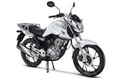
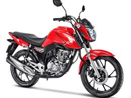
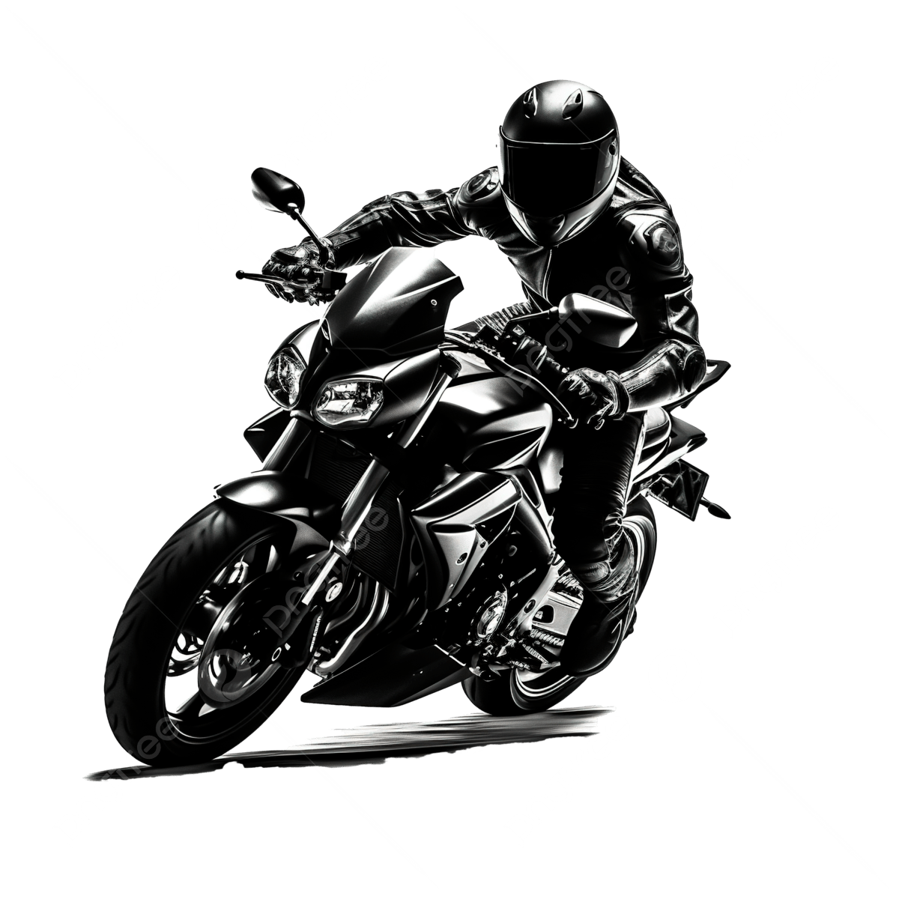
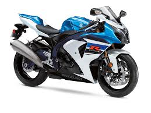

Bem-vindo à Nossa Loja!
Encontre os Melhores Produtos Aqui.
Somos uma auto mecânica especializada em reparo, manutenção e aprimoramento de motos novas e usadas, oferecendo serviços completos com qualidade e responsabilidade. Nossa estrutura é dividida em diversos setores, como mecânica geral, elétrica, suspensão, freios e performance, garantindo um atendimento técnico e eficiente para cada necessidade. Contamos com profissionais experientes, equipamentos modernos e peças de confiança, sempre priorizando a segurança, o desempenho e a durabilidade da sua motocicleta. Nosso compromisso é oferecer um serviço transparente, ágil e de excelência, cuidando da sua moto como se fosse nossa.



